A post office for two, where neither desk can deliver alone.
Unlikely Mail is a cooperative puzzle game for two people in two browsers. One player is the Correspondence Clerk, who reads strange letters addressed to places that probably should not exist. The other is the Directory Archivist, who holds the records that say where those places are and what it costs to reach them. They cannot see each other's desk. To deliver a letter, they have to talk.
I conceived, designed and art-directed the game for Handshake's multiplayer game challenge and built it as a hosted MVP, with AI coding tools doing the implementation. The current version has six authored cases, three curated shift templates and a shared, limited supply of stamps that the two players have to plan around together.
My role
Creator, product designer, UX/UI designer, visual designer, art director
AI collaboration
Code by Codex and Claude, artwork generated with ChatGPT, all under my direction and review
Six-case MVP on hosted staging. Production stays on the earlier three-case build.
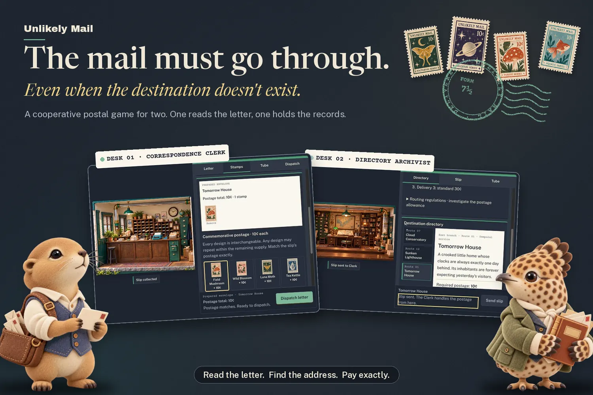
Handshake cover. Built from real workstation captures, the approved character renders and four of the game's twelve stamp designs.
The design problem
How do you design a cooperative game where communication is essential, but neither player feels like they are simply waiting for instructions?
I did not start with a formal research hypothesis. I started with a feeling I wanted two people to share: the small, specific satisfaction of figuring something out together that neither of you could have figured out alone. The product requirements I wrote put it as a north star in the players' own words, "We actually figured that out together."
That goal set the constraints for everything else. Knowledge had to be split so that each player held something the other needed. Each role had to have real work to do, not just a screen to read aloud. Neither player could be allowed to solve a case alone. And because the premise is a bureaucracy that delivers mail to impossible places, the rules had to be playful without becoming a wall of forms. The world could be strange. The interface could not be confusing.
Art direction
Building a world you can sit inside.
The world began with real, very remote post offices: the kind of small civic building that still has a counter and a stack of forms. I wanted the game to feel like one of those places rendered as a handmade miniature, as if you were looking into a hobbyist's scale model with its front wall removed. The direction I locked on October 8 described it as 95 percent ordinary civic building and 5 percent quietly impossible.
One of those buildings I knew long before this project. I lived in Kadoka, South Dakota, for three years, so when the miniature needed an architectural direction, I started from a post office I already knew rather than one I found through research. What I carried over was the building itself: a low rectangular box with horizontal banded masonry, a metal roofline, a plain entrance and one distinctive rounded corner. It looks like it was built to do a job, and I wanted that seriousness underneath all the whimsy.
From memory to miniature. Having lived in Kadoka for three years, I drew on the familiar architecture of its post office when developing the fictional world of Unlikely Mail.
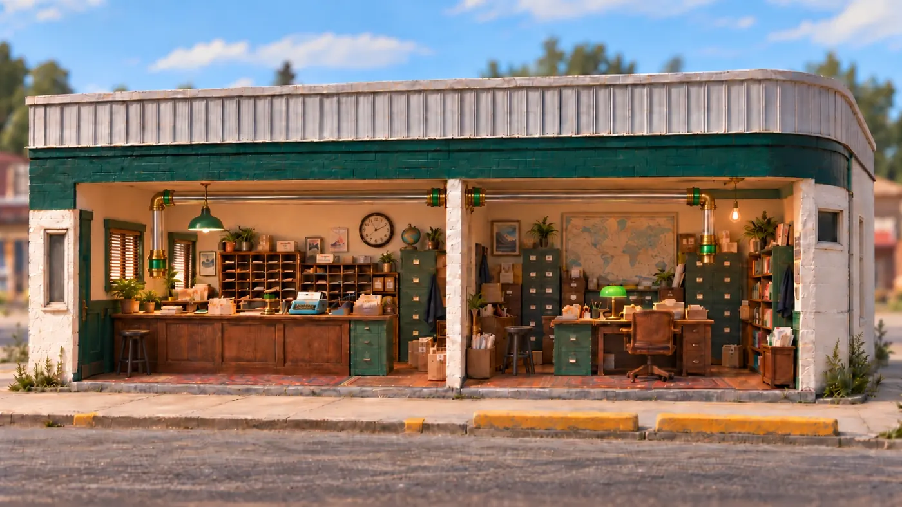
Final two-room cutaway. The front wall comes off to reveal two separate workspaces joined by one tube. This is the environment players see on the landing page and in the lobby.
What we kept
The low rectangular footprint, the single rounded corner, the horizontal banding between an upper and lower wall, the corrugated metal roofline, the plain entrance and restrained windows, and the roadside civic scale.
What we reinterpreted
Blue and white became forest green over warm cream. The federal signage became an original Unlikely Mail sign; the art direction I handed off prohibited the town name, its ZIP code, USPS marks and the eagle emblem. The real building became a handmade model photographed as if through a macro lens. Unlikely Mail is a fictional post office and is not set in Kadoka.
Why two asymmetric rooms
A real post office of that size is mostly one open room. The Clerk and the Archivist hold deliberately different information, so I gave them physically different places to work: a public counter for correspondence and a separate records room for research and routing. The tube through the dividing wall is the only way a slip travels between desks, which makes the game's central rule visible.
Moving the camera to eye level
Early room exploration used top-down and three-quarter overhead views, the kind common in management and miniature games. I found that treatment uncomfortable and visually disorienting, and I suspected I would not be the only one. I replaced it with a locked, straight-on dollhouse cutaway at roughly room height, with no orbiting, panning, parallax or camera movement during play. Close inspection happens in flat, readable overlays rather than by moving the camera toward an object.
This was an accessibility decision before it was an aesthetic one, and it turned out to suit the world. A fixed frontal view reads like a museum display or a stage set. Each player gets a stable picture of their own room, and both rooms share one camera standard, so they feel like halves of the same building.
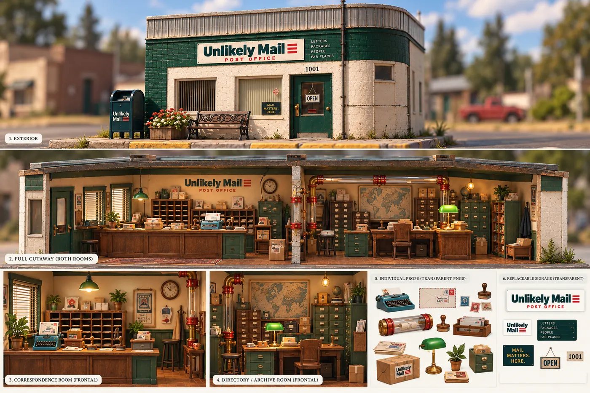
Approved two-room direction board, October 8. Exterior, full cutaway, each room and the material palette. The board's slight photographic angle was illustrative; gameplay uses the frontal view.
A desk first, a scene second
An early version led with a large scenic illustration and layered the controls onto and beneath it. It was pretty, but it read as a hero image with a form attached, and players had to look past the art to find the letter, the stamps and the tube.
I reworked the layout around the desk as a working surface. The room art moved to the side, at a size that still sets the mood, and the work panel became the center of attention, with a tab for each station. Status such as Tube ready and Slip collected is anchored to the room art, so the picture stays meaningful rather than decorative.
Earlier · light theme
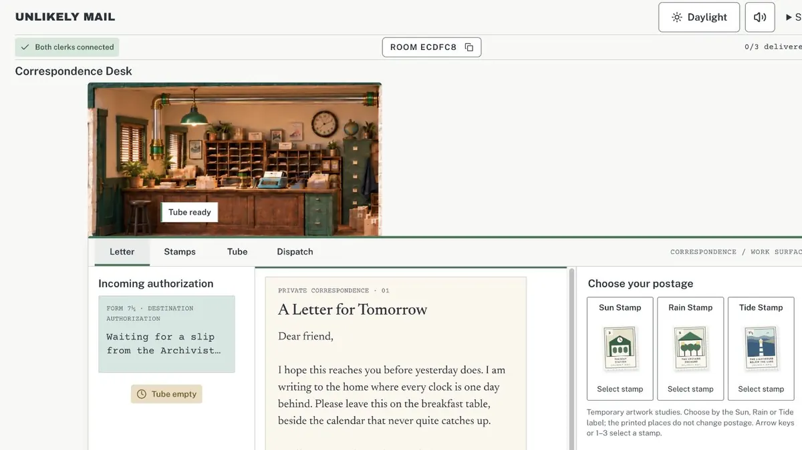
Daylight toggle, a picture above a strip of controls, and the first stamp choice: one stamp per destination.MVP workstation · dark
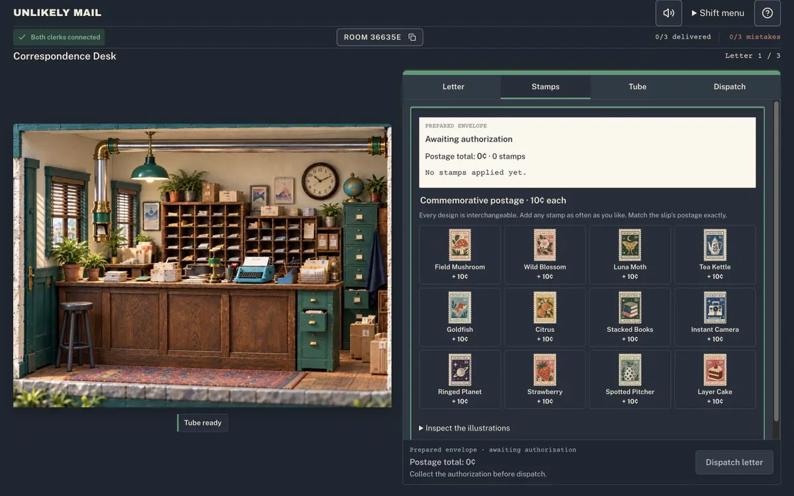
Permanent dark theme and a tabbed work surface, with the scene still stacked on top.Final polish · desk first
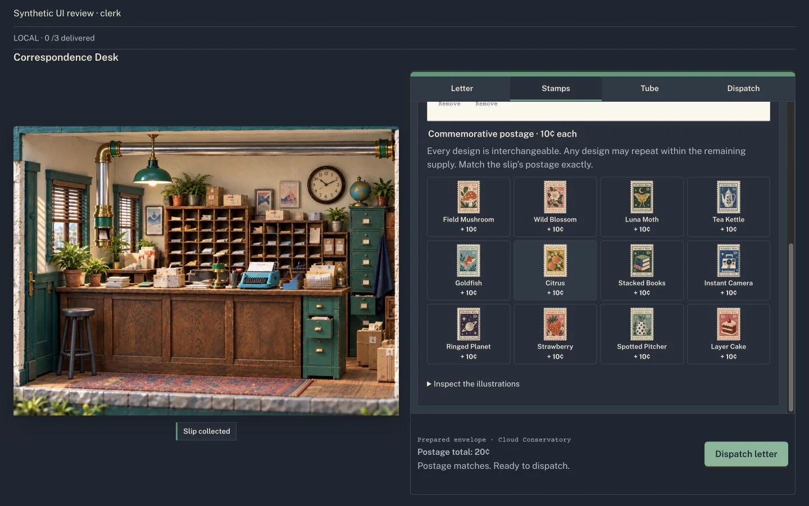
Scene and work surface side by side. Captured from a local review build, which labels itself in the top bar.
A civic interface, not a parchment one
Some explorations drifted toward overly parchment-colored screens that looked like a generic AI-generated interface rather than a post office. I rejected that direction, made a dark navy interface permanent on October 9 and applied a full brand standard on October 11.
The system is restrained on purpose: navy surfaces, postal green for confirmation and progress, a soft gold reserved for keyboard focus, and paper texture only where something really is paper, such as the letter, the slip and the stamps. Typography has jobs. A serif sets the letters and the voice of the world, a sans serif handles instructions and controls, and a typewriter face is used for forms and slips. I raised instructions and primary actions to a 16 pixel minimum so the bureaucracy would never be the hard part to read.
The balance I wanted is that the world gets to be odd and the interface never does. A letter can be addressed to a house that is always a day behind, but the button that sends the slip should look and behave like a button.
Characters
Two characters who give the procedure a face.
My first visual direction said no animal characters. I wanted the building to carry the charm on its own. Once the workstations worked, though, the game felt procedural in a way I did not like: two people filling in forms for each other. The roles needed someone to be.
I chose a prairie dog for the Clerk and a grouse for the Archivist. The Clerk carries a satchel of letters and holds one up to read; the Archivist holds a thick ledger with notes tucked inside. I approved both on October 14. I did not draw them myself. I art-directed ChatGPT, which generated the images: I wrote the direction, judged each result and asked for revisions until the characters felt right. What I was steering toward was domestic warmth and gentle eccentricity, characters who seem to have a life outside the counter, without imitating anyone else's characters or tipping the world into a toy aisle. The same process produced two treatments of each character, an illustrated portrait and a soft miniature render.
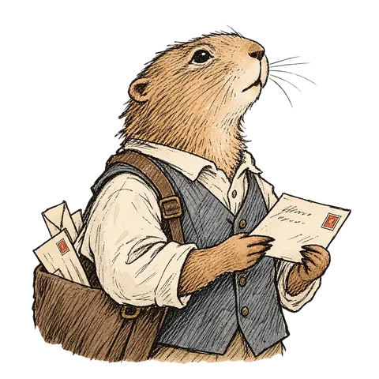
Clerk portrait. Illustrated, with restrained color.
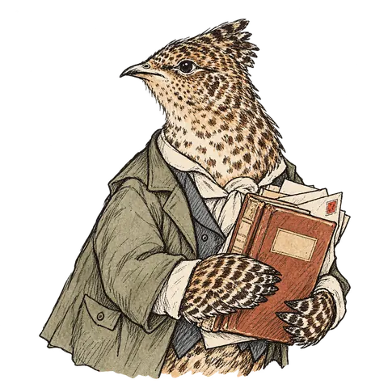
Archivist portrait. Used on lobby role cards.
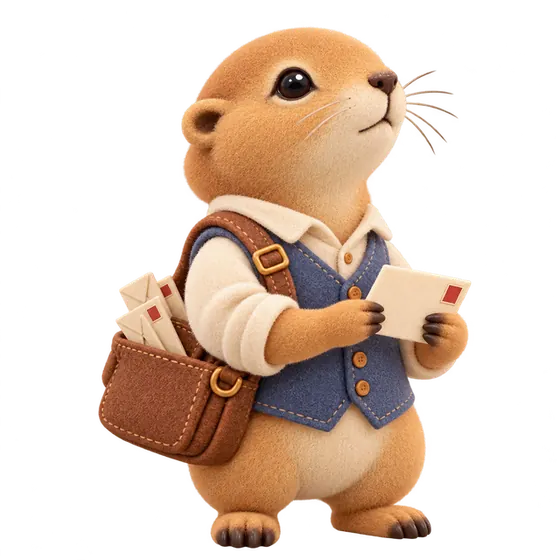
Clerk miniature. Static render for the hero.Archivist miniature. Placed beside the building.
Illustrated portraits
Lobby role cards, cropped tightly at small sizes where line and expression matter more than volume.
Transparent assets
Cut-out PNG and WebP files, so each figure can sit on the navy interface or over the building without a box around it.
Miniature renders
Stand either side of the post office in the landing hero. They are static images, not animated or playable 3D models.
Role integration
Whoever starts a shift is the Clerk and whoever joins is the Archivist. I chose not to add a role picker for the MVP.
Responsive scaling
I compared alternative sizing treatments across six screen sizes from 360 by 800 to 1920 by 1080, and approved figures at 40 percent of the hero height on desktop, 42.5 on tablet and 47.5 on mobile.
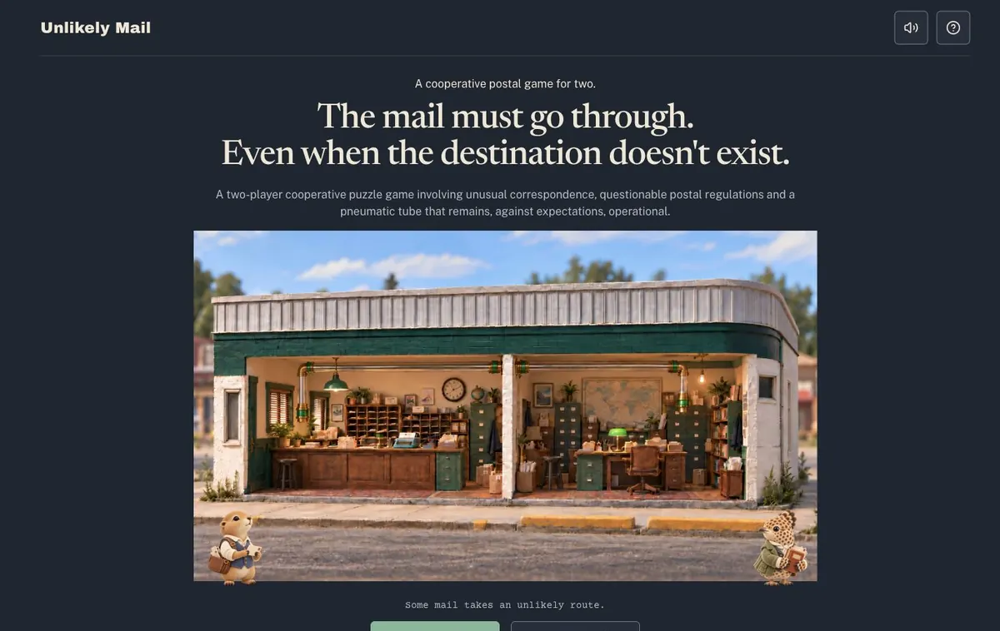
Landing hero, desktop. Approved sizing review at 1440 by 900.
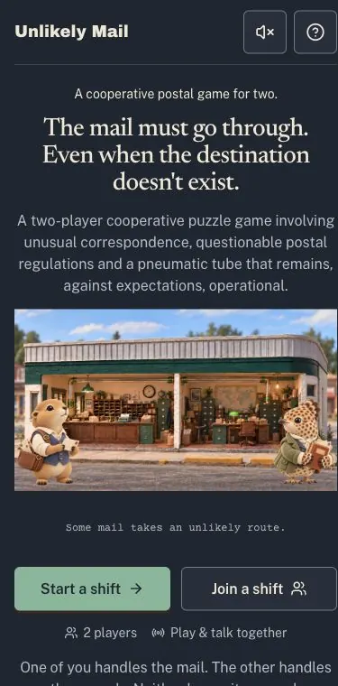
Live, 390 wide.
The characters did something the mechanics could not. They gave each role an identity players can take on, so "you be the Clerk" means something before anyone has read a rule.
Interaction model
How a delivery works.
A shift is three letters. Two people join the same room with a short room code. The creator becomes the Clerk and the second player becomes the Archivist.
Role privacy is the core of the design. Neither screen contains the answer. The Clerk has the human details and the Archivist has the institutional ones, and the right destination is the one where both sets of facts agree. That split is what makes the conversation necessary rather than polite.
ClerkOpens an incoming letter. It is personal and never names its destination outright.
ArchivistSearches a directory of twelve records, several plausible for any letter.
BothTalk it through until they agree which record matches.
ArchivistInvestigates and confirms that destination's routing condition.
BothAgree a postage plan for the shift and each acknowledge it.
ArchivistSends an authorization slip through the pneumatic tube.
ClerkCollects the slip, matches its postage exactly with stamps and dispatches.
BothSee the result and move on to the next letter.
The Clerk sees
The letter and its sender
The shared stamp supply
The incoming slip and the dispatch counter
The Archivist sees
The full directory of records
Routing regulations and conditions
The shift manifest of postage totals, which the Clerk does not
12345
1Room art stays visible and carries live status such as Slip collected.
2One tab per station keeps each step on a single, predictable surface.
3Twelve interchangeable 10¢ designs. The art is decorative; only the count matters.
4The envelope summary states the slip's destination and whether postage matches.
5Dispatch sits in a fixed position so adding a stamp no longer moves it.
Clerk desk, final polish build. Local review capture at 1440 by 900.
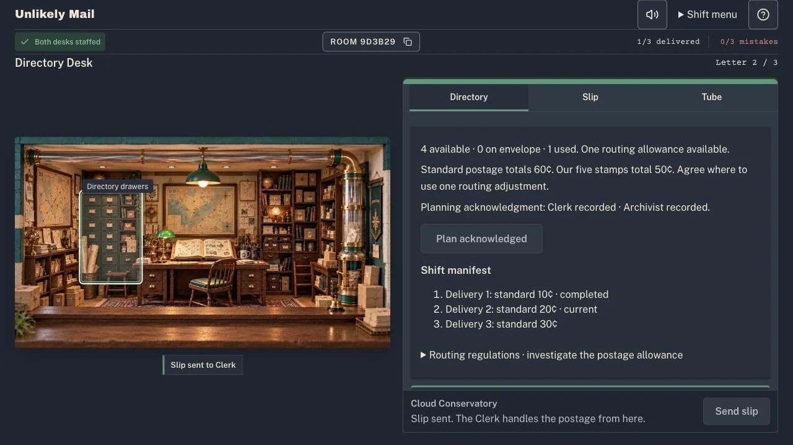
Archivist desk. The shift manifest and routing regulations live only here. Captured during local cooperative-postage testing, October 14.
Cooperative mechanics
Giving the players something to plan.
The first playable game had three fixed deliveries in a fixed order and a simple stamp choice, one illustrated stamp per destination. A later version, which is still the one in production, let the Clerk build exact postage from twelve decorative 10¢ designs. Both worked. Neither gave the players much to decide together once the address was found. The Archivist named a destination, the Clerk stamped it, and the second half of every delivery was a formality.
On October 14 I introduced cooperative postage planning. Each shift now has five shared 10¢ stamps for three deliveries whose standard postage adds up to more than that. The Archivist can research a routing condition that allows one authorized postage adjustment per shift, and using it is optional.
I want to be candid about the first version. With three fixed letters there were exactly two valid plans, and both saved the same 10¢ by using the adjustment on a different letter. I treated that release as a test of whether the planning step produced conversation at all, not as a deep strategy system. It needed variety to become one, which is what the replayability work set out to add.
STANDARD POSTAGE 10¢ + 20¢ + 30¢ = 60¢SHARED SUPPLY 5 × 10¢ = 50¢PLAN A 10 · 10 · 30 PLAN B 10 · 20 · 20
Planning before spendingBoth players acknowledge a postage plan for the whole shift, so the first stamp is a shared decision.
Research with a purposeThe Archivist confirms each destination's routing condition before an authorization goes out, which decides whether the adjustment can apply.
Revisable paperworkThe Clerk can ask for a revised slip and the Archivist can reissue it through the tube.
Exact dispatchPostage must match the slip. Placing a stamp reserves it, removing it returns it, and only a correct dispatch consumes it.
Private forward knowledgeUpcoming postage is visible only to the Archivist, so the Clerk depends on a colleague to plan ahead.
A server that protects the shiftAn authorization that would leave the rest of the shift impossible is refused, so a bad early choice cannot quietly trap the players.
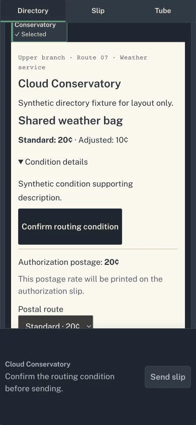
Archivist, 390 wide. Confirm the routing condition before sending.
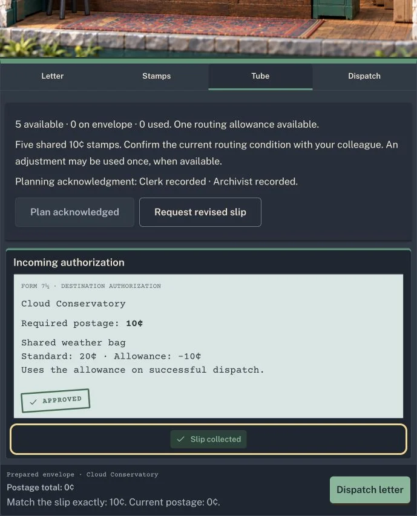
Clerk, tube. The plan acknowledgment and an approved slip using the adjustment.
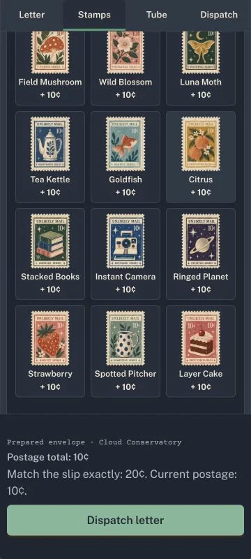
Clerk, 360 wide. Exact postage, ready to dispatch.
Replayability and narrative
Six letters, eighteen shifts.
I expanded the game to six cases. The original three stayed exactly as written: A Letter for Tomorrow, delivered to Tomorrow House; The Rain Collector, delivered to the Cloud Conservatory; and The Lighthouse Keeper, delivered to the Sunken Lighthouse. Three new cases were designed to ask for different kinds of reasoning.
Case 04 · Railway branch
The Last Stop
"Mum says they've taken the station off the timetable. I don't suppose that changes much about Thursdays."
Elsie writes to her grandfather about the weekly crossword. The case is about being remembered after the timetable has moved on.
Three Bell records: an active station with an Ada Bell, a closed crossing kept by Arthur Bell, and a retired station whose parcels desk is still registered to A. Bell and still collects every Thursday. Only one fits every detail.
Case 05 · Intercounty register
The House Between Mile Markers
"East County says to turn back at their last marker. West County says your house is before their first one."
June writes to Winnie about returning a blue casserole dish, and mentions that both counties send Winnie a bill.
Each county route looks right and each excludes her house. The answer is a separate intercounty registration, which means telling who collects an assessment apart from who delivers.
Case 06 · Department of Mislaid Things
The Unclaimed Apology
"You were right about what happened. I knew it then, too. I should have said so."
A short apology from A. to M., filed as a personal effect. We rewrote it to be shorter and less articulate, like a letter started many times. It never says what happened or whether M. forgives anyone.
Property returns, the register of M. Ellis's annual inquiries, and the correspondence desk where the letter belongs all share one file number.
The personal stories are understated so the institutions can be absurd around them. If the letters were whimsical too, the cases would turn into jokes. Because Elsie, June and A. sound like real people writing ordinary letters, the bureaucracy reads as gently ridiculous, and the delivery feels like it matters.
6authored cases
3curated templates of three cases
6orders per template
18supported ordered shifts
36valid postage allocations across those shifts
Those numbers describe supported combinations, not content. There are six stories, not eighteen, and thirty-six allocations are not thirty-six distinct puzzles. What the structure buys is variation I could author and verify: each shift changes which letters appear, in what order, at what price and where the adjustment is worth using, and every supported combination was checked to be solvable. I chose that over procedural generation because a handwritten letter is the heart of each case, and I would rather have six letters I trust than an endless supply I cannot read.
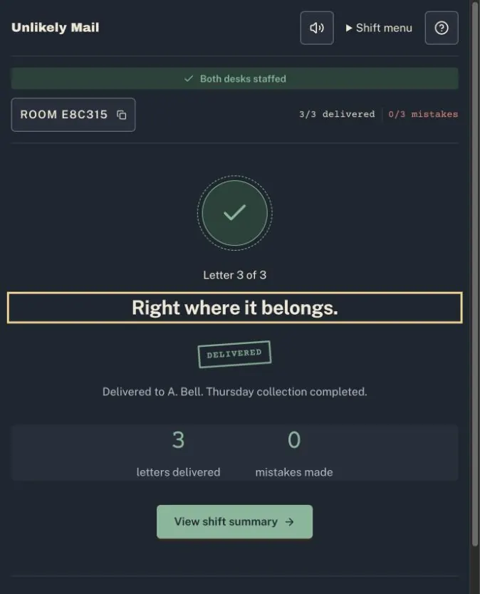
The Last Stop, delivered. Local replayability build, October 19.
Accessibility and usability
Where testing changed the design.
Much of the iteration came from testing, including two-player sessions where an AI agent drove both browsers and recorded what happened. These are the changes I care most about.
Keyboard focus was getting lost
Sending or collecting a slip returned focus to the top of the page, which strands anyone using a keyboard. We fixed focus after sending and collecting slips, adding and removing stamps, dispatching, acknowledging plans, retrying a letter and moving to the next one. Each action now lands on the status message or heading that describes its result.
Before · Collect
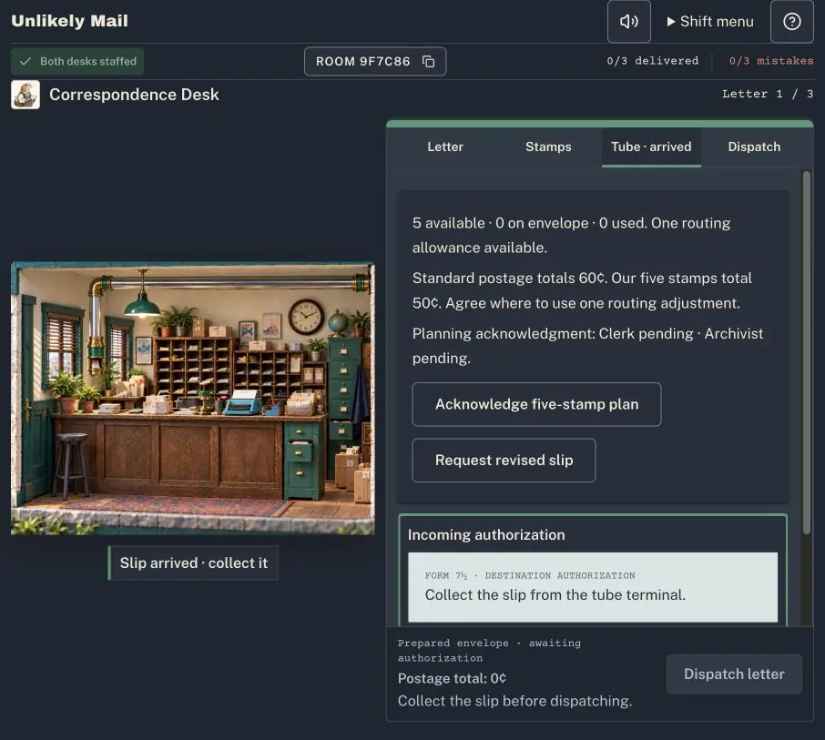
After · Collect
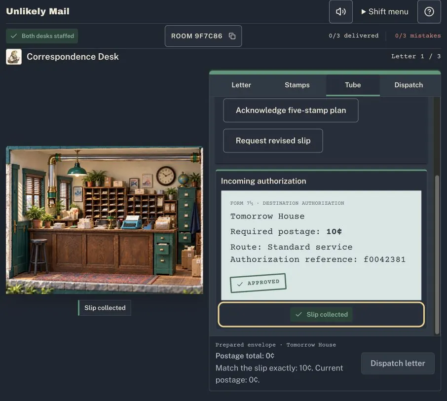
Before · Send
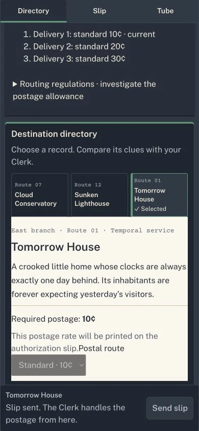
After · Send
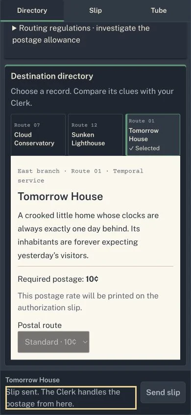
Focus fix, October 15. Local captures at 906 wide and 390 wide.
Send slip sometimes ignored a click
Testing caught Send slip disabled for about 200 to 250 milliseconds while the game refreshed its data, so some clicks seemed to do nothing. We kept Send available during healthy read-only refreshes, left every write protected by the existing locks and server checks, and added no automatic retry.
Dialogs, menus and targets
The shift menu now closes on Escape and returns focus to where it came from. The leave confirmation traps focus correctly. Focus rings use one consistent gold token, and controls such as the room code and route selector have a 44 pixel minimum height.
Mobile layout had real collisions
At 390 and 360 pixels, Collect slip could sit half behind the sticky action bar. We gave it clear room, stabilized Dispatch so adding a stamp no longer shifts it, and raised two small disclosures to 44 pixels.
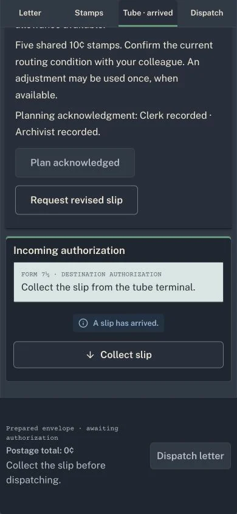
Collect slip clear of the bar at 390 wide, after the October 21 polish.
These mobile checks ran at phone widths in desktop browsers. No physical phone was tested, so touch behavior on real devices is still unverified.
Keeping two browsers honest
I made the product decisions and AI coding tools did the implementation, so my job included asking the right questions about reliability. Most of them were player questions in technical clothing. What happens when both players click at once? What happens if one of them loses Wi-Fi for a minute? Can a stale screen send an outdated slip?
The answers shaped the experience. Every action is checked by the server against the current version of the room, so a stale action is rejected with a plain message: "The desk has changed. Refresh and try again." Dispatch is protected against double clicks and concurrent windows. Realtime updates prompt an immediate sync, with polling as a fallback. If a player drops out, their colleague sees the shift paused rather than broken, and on return the shift picks up where it was. The Archivist's private manifest and research are kept out of the shared room data the Clerk's screen receives.
The biggest lesson was the difference between a feature that works and a release that is ready. Real time went into migration safety, preserving rooms already in progress, backup and restore planning and keeping staging and production separate. That work is why the six-case version runs on its own staging environment.
Testing and evidence
What the evidence says, and what it does not.
I want every number here to mean what it says. Everything below is self-testing: my own play, AI-operated browser runs I directed, and automated suites. Playtesting with outside players is starting now, and no results are in yet.
Result
What it actually represents
Kind
142 automated tests passed
Code-level checks on the final frontend polish build, run locally. They are not players.
Automated
All 18 orders and 36 allocations validated
Native PostgreSQL 17.6 campaigns covering cooperative postage, replayability and environment checks. The hosted staging database runs 17.11.
Automated
Hosted shifts completed 3 of 3
After the staging migration, four new-format rooms covering all three templates and one older-format room each delivered three of three; all six cases appeared.
AI-operated · Codex
Recorded shift, 0 mistakes
A side-by-side recording of both roles completing one template A shift on staging.
AI-operated · Claude
Realtime ahead of polling
The Clerk's screen showed Slip arrived about one second before its next scheduled poll.
AI-operated · Claude
Duplicate dispatch rejected
Two windows dispatching together produced one accepted and one rejected request; a fast triple click produced one dispatch.
AI-operated · Claude
Offline recovery kept progress
After about three minutes offline the colleague saw the paused state; on reconnection both desks were staffed again within a second, with the same identity and progress.
AI-operated · Claude
Existing rooms preserved
Rooms, plans and identities already on staging matched exactly after migration.
AI-operated · Codex
Mobile 390 and 360 wide
Both roles at phone widths in desktop browsers, with no horizontal overflow. No physical device.
Emulated
External playtests
Starting now with pairs who have not seen the game. No results yet.
In progress
One full shift, both desks at once. Clerk on the left, Archivist on the right, recorded on staging on October 21. A time-lapse with one frame per action; the clock bar shows real time. 110 seconds, no sound.
Outcome
A playable, hosted six-case MVP.
Unlikely Mail runs on its own staging environment, separate from the original production build, which still plays the earlier three fixed letters. The two have not been merged.
The cooperative loop works end to end in two browsers, from room code to shift summary.
The Clerk and the Archivist are distinct roles with private information and real work on both sides.
The miniature post office, the characters and the civic interface give the game its own identity.
Eighteen supported shifts give returning players different letters, orders and postage decisions.
Keyboard, focus, target size and mobile issues found in testing were fixed and retested.
The layout holds from 1440 pixels down to 360.
Reflection
The hardest part was knowing when to stop engineering.
Getting a multiplayer game to work was hard. Deciding when it worked well enough to stop was harder. Every reliability question had a more thorough answer available, and AI tools made each one feel cheap to pursue. Some of that work was essential, like making sure two people could never deliver the same letter twice. Some of it was me postponing the moment when other people would play the game.
I also kept cutting anything that let one player solve a case alone. Every time a screen gave away a little too much, the conversation got shorter. The game is at its best when both players are slightly unsure and have to ask.
And I learned how much work understatement does. The letters that land hardest are the plainest ones.
Roadmap
What comes next.
Planned · not built
External playtesting, starting now with pairs who have never seen the game, focused on whether the planning step produces real discussion.
Rebuilding the miniature world in Blender. The MVP is deliberately 2.5D, with generated room images and HTML controls on top. Modeling the post office in Blender is the next step toward a more physical, consistent world.
More destinations and complications, including cases where using the adjustment early is the wrong call.
More routing conditions and strategies that make the shared stamp supply matter more.
Environmental storytelling and workstation interactions built into the room art, such as working the tube or the stamp drawer directly.
Greater character involvement, including animation.
Touch interactions verified on real phones, and longer-term progression across shifts.